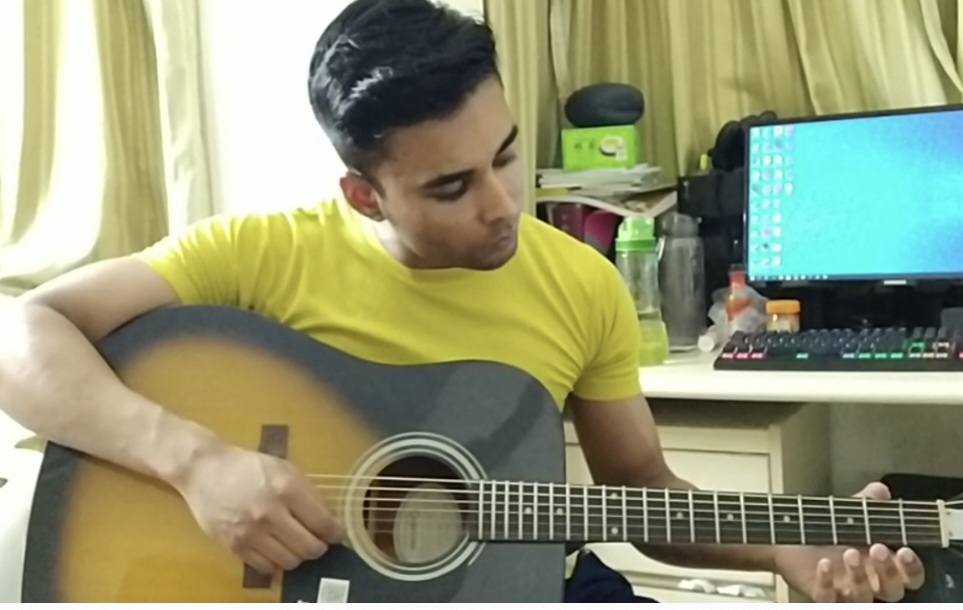
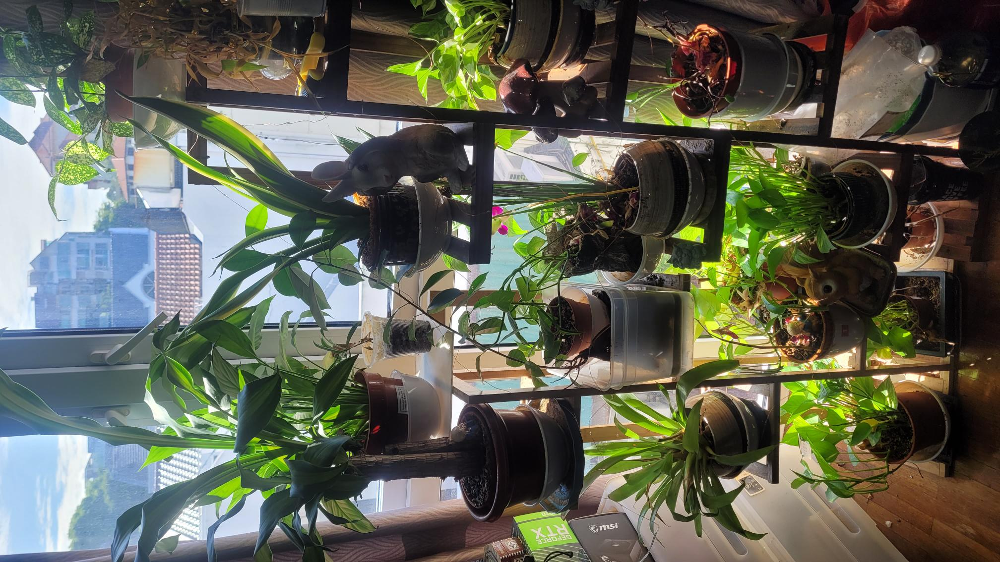

Aquascaping and Aquariums
Keeping aquatic ecosystems is both a relaxing pastime and a fascinating biological balancing act. I enjoy designing planted tanks and managing the water chemistry that keeps aquatic life thriving.
This hobby crosses over into my engineering work quite a bit. It inspired automated care and feeding systems like FISHER, so the fish are well looked after even when I am away from the tanks.
3D Printing
I am a big supporter of open-source hardware and fast prototyping. Running several 3D printers, including high-speed dual-nozzle machines like the Bambu Lab H2D, lets me turn CAD designs into real parts right away.
Whether I am making custom cases for microcontrollers, printing brackets for camera arrays or just fixing things around the house, 3D printing is part of my daily workflow.
Building PCs and Small Computers
I love the hardware side of computing. From powerful workstations for deep learning to low-power computers like the Intel N95 and Raspberry Pi, I enjoy tuning hardware for a specific job.
For me, building a computer is not only about gaming. It is about making small, independent "brains" that can run neural networks and handle many USB devices smoothly.

Playing Guitar
Music gives me a needed break from the analytical side of research. Playing the guitar is my favorite way to get away from screens and data.
It is a purely creative outlet that helps me reset, focus on rhythm and melody, and clear my head after a long day of coding or experiments.

Indoor Gardening
Growing plants indoors is very rewarding. I enjoy tuning light, soil moisture and nutrients to grow everything from houseplants to dense trays of microgreens.
This hobby fed directly into my interest in farming AI. What started as checking soil and watering by hand grew into the automated, camera-driven systems I now build to keep plants healthy.